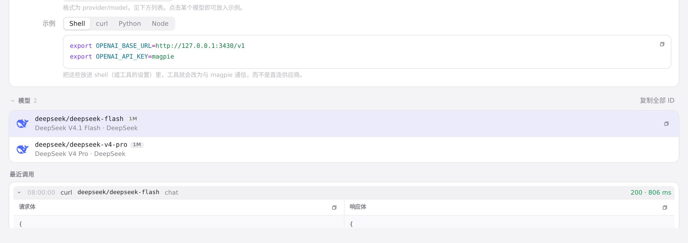

#280 界面预览
commit 7bb25fe · 回到 PR · 此 PR 增加按供应商/模型的上游模型名别名（通过 CLI 设置），请求发出前把 model 字段改写为供应商认识的名字；网关最近调用的请求体在设置别名后会显示该别名，而路由、用量列表仍显示规范名。设置页保存现在也会保留所有按模型保存的偏好（包括上游别名）。
红线是鼠标走过的轨迹，红色圆环是一次点击；底部文字是这一步在做什么。空格暂停，← → 逐段查看。

网关最近调用里的 model 字段 · 请求体中的 model 字段；设置上游别名后这里显示供应商认识的模型名